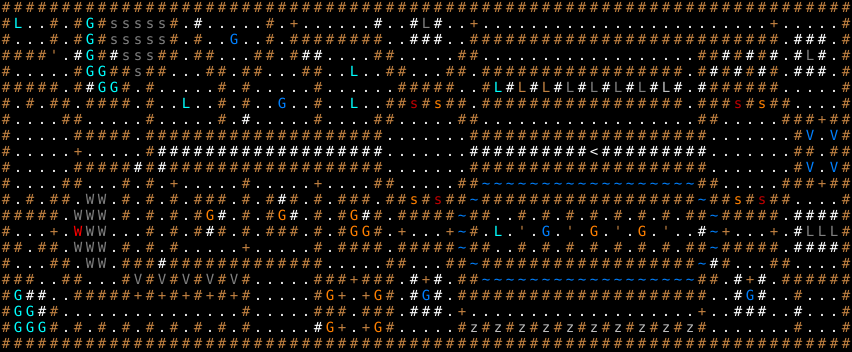

王家の墓 / The Royal Crypt
固定クエスト「王家の墓」の達成条件・報酬・地形・出現モンスター・クエストメッセージ。
Fixed quest "The Royal Crypt": objective, reward, terrain, monsters and messages.
← クエスト一覧 / All quests · 🏠 ホーム / Home
概要 / Overview
| 項目 | 内容 |
|---|---|
| 受注箇所 | 辺境の町（アウトポスト）（BUILDING_1） |
| 種別 | 特定ユニーク撃破 |
| 対象Lv（危険度） | 70 |
| 目標 | アーチリッチ / Archlich ×5 |
| 前提クエスト | 25: 幽霊屋敷 |
| 報酬 | — |
| フラグ | PRESET / ONCE |
達成条件 / Objective
目標モンスターを 5 体撃破 すると達成。
クエストメッセージ / Messages
依頼時
不思議な力が王家の墓地に入り込み、王様の高貴な先祖たちの墓を汚して
います。先祖の遺体は魔法で操られ、その魂は悪の奴隷となってしまいました。
あなたは墓地に行き死体を操っているアーチリッチどもを見つけ出さなくては
なりません。奴らさえ倒せば、残りは我々の衛兵が片付けてくれるでしょう。
達成（報酬）時
なんとお礼すればよいのでしょう！喜ばしいことです。
伝説の英雄が今この時この街を歩んでいるのです。ところで私のところの
財産管理人が、墓地にあった幾つかの先祖伝来の家宝が行方不明になったと
教えてくれました。私は見て見ぬふりをしますから、これでおあいこという
ことでいかがでしょう。
失敗時
私の信頼を裏切ってくれましたね。もう今となっては王の祖先
の魂を鎮めることは誰にも出来ません！
出現モンスター / Monsters
| 記号 | 表示 | モンスター | 体数 |
|---|---|---|---|
a |
s（Dark Gray） | 窖に潜むもの / Crypt Creep | 14 |
b |
G（Light Blue） | 幽体獣 / Phantom beast | 13 |
c |
z（Light Gray） | 王のミイラ / Greater mummy | 10 |
d |
W（Gray） | グレイ・レイス / Grey wraith | 7 |
n |
G（Orange） | ドリードマスター / Dreadmaster | 7 |
e |
V（Gray） | マスター・バンパイア / Master vampire | 5 |
g |
W（Dark Gray） | ブラック・レイス / Black wraith | 5 |
o |
L（Dark Gray） | 灰色の掠奪者 / Lesser black reaver | 5 |
s |
G（Blue） | シャドウ・ロード / Shadowlord | 5 |
t |
L（Light Blue） | アーチリッチ / Archlich | 5 |
j |
V（Blue） | バンパイア・ロード / Vampire lord | 4 |
m |
G（Orange） | ドリード / Dread | 4 |
q |
s（Red） | 目のドルジ / Eye druj | 4 |
r |
s（Orange） | 頭蓋のドルジ / Skull druj | 4 |
p |
L（Light Brown） | デミリッチ / Demilich | 2 |
u |
L（Dark Gray） | 黒き掠奪者 / Black reaver | 2 |
l |
L（Gray） | アイアン・リッチ / Iron lich | 2 |
f |
L（Light Blue） | 窖の怪物 / Crypt thing | 1 |
i |
W（Light Red） | 冥界レイス / Nether wraith | 1 |
k |
L（Light Gray） | マスターリッチ / Master lich | 1 |
地形・マップ / Map
初期位置と固定配置。記号の意味は下の凡例を参照。

ASCIIマップ
XXXXXXXXXXXXXXXXXXXXXXXXXXXXXXXXXXXXXXXXXXXXXXXXXXXXXXXXXXXXXXXXXXXXXXX
Xf,,X,XbXaaaaaX,#,,,,,X,+,,,,,,#,,#u#,,+,,,,,,,,,,,,,,,,,,,,,,,,+,,,,,X
X,,,X,XbXaaaaaX,X,,s,,X,XXXXXXXX,,###,,XXXXXXXXXXXXXXXXXXXXXXXXXX,###,X
XXXX',#bX#aaaXX,XX,,,XX,X##,,,,XX,,,,,XX^^^^^^^^^^^^^^^^^^XX#X#X#,#u#,X
X,,,,,XbbXXaXX,,,XX,XX,,,XX,,t,,XX,,,XX^XXXXXXXXXXXXXXXXX^X#X#X#X,###,X
XXXXX,X#bbX,X,,,,,X,X,,,,,X,,,,,,XXXXX^^Xt#p#p#o#o#l#l#k#^#XXXXXX,,,,,X
X,X,XX,XXXX,X,,t,,X,X,,s,,X,,t,,XXqXrXX^XXXXXXXXXXXXXXXXX^XXXqXrXX,,,,X
X,,,,XX,,,,,X,,,,,X,#,,,,,X,,,,XX.....XX^^^^^^^^^^^^^^^^^^XX.....XXX+XX
X,,,,,XXXXX,XXXXXXXXXXXXXXXXXXXX.......XXXXXXXXXXXXXXXXXXXX.......Xj,jX
X,,,,,+,,,,,X###################.......##########<#########.......XX,XX
X,,,,,XXXXX#X#XXXXXXXXXXXXXXXXXX.......XXXXXXXXXXXXXXXXXXXX.......Xj,jX
X,,,,XX,,,X,X,+,,,,,X,,,,,+,,,,XX.....XXWWWWWWWWWWWWWWWWWWXX.....XXX+XX
X,X,XX,dd,X,X,X,XXX,X,X#X,X,XXX,XXrXqXXWXXXXXXXXXXXXXXXXXXWXXrXqXX,,,,X
XXXXX,ggd,X,X,X,Xm#,X,Xm#,X,Xm#X,XXXXXWXX,,X,X,X,X,X,X,X,XXWXXXXX,####X
X~,,+,igd,,,X,X,X#X,X,XXX,X,XnmX,+,,,+WX,t,'^s^'^n^'^n^',,#W+,,,+,#oooX
XX,XX,ggd,X,X,X,,,,,+,,,,,X,XXXX,XXXXXWXX,,X,X,X,X,X,X,X,XXWXXXXX,####X
X~,,XX,dd,XXX#XXXXXXXXXXXXX,,,,,XX,,,XXWXXXXXXXXXXXXXXXXXXW#X,,,XX,,,,X
XXX,,XX,,,XeXeXeXeXeX^^^^^XXX+XXX,#+#,XXWWWWWWWWWWWWWWWWWWXX,#+#,XXXXXX
Xb##,,XXXXX+X+X+X+X+X^,,,^Xn+,+nX,#s#,XXXXXXXXXXXXXXXXXXXXX,,#s#,,X^^^X
Xbb#X,,,,,,,,,,,,,,,X^,,,^XXX,XXX,###,+^^^^^^^^^^^^^^^^^^^+,,###,,#^~^X
XbbbX~X~X~X~X~X~X~X~X^^^^^#n+,+nX,,,,,XcXcXcXcXcXcXcXcXcXcX,,,,,,~X^^^X
XXXXXXXXXXXXXXXXXXXXXXXXXXXXXXXXXXXXXXXXXXXXXXXXXXXXXXXXXXXXXXXXXXXXXXX
地形の凡例
| 記号 | 表示 | 地形 / 内容 |
|---|---|---|
X |
#（Light Brown） | 永久岩の壁 |
, |
.（White） | 床 |
# |
#（White） | 花崗岩の壁 |
+ |
+（Light Brown） | 鍵のかかったドア |
' |
'（Brown） | 壊れたドア |
^ |
.（White） | 床 |
. |
.（White） | 床 |
< |
<（White） | 上り階段 |
W |
~（Blue） | 深い水 |
~ |
.（White） | 床 ＋ 人間の骨 |
🤖 この解説ページは
tools/generate-wiki.mjsにより生成されています（出典:lib/edit/quests/*.txt,lib/edit/QuestPreferences.txt）。手動で編集しないでください — 変更は次回の再生成で上書きされます。内容の修正は生成スクリプトを編集してください。 生成 / Generated: 2026-07-05 07:41 UTC · hengband5ebae9734b·tools/generate-wiki.mjs